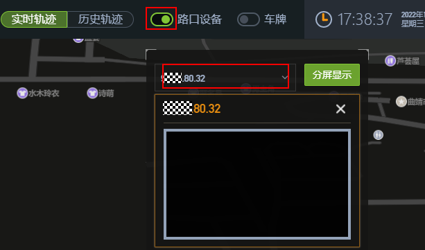

视频对接
对接目的
在第三方应用平台上查看实时视频。
准备材料
创建视频对接账户，参考
创建对接用户
对接操作
访问世纪高通Web界面，点击
“配置中心”
，进入
“设备管理”
。
图1
设备管理
选择对应路口，单击
“配置”
。
IP：ITS800设备IP
端口：18531
用户名：
准备材料
中新增用户的用户名
密码：
准备材料
中新增用户的密码
图2
微边缘设备配置
点击
“保存”
，再点击
“同步摄像机”
。自动读ITS800对接的所有摄像机列表
图3
同步摄像机
功能验证
在首页，选择路口，进入
“全息视角”
页面。开启
“路口设备”
，选择播放的摄像机名称，查看播放视频画面。
图4
视频播放
